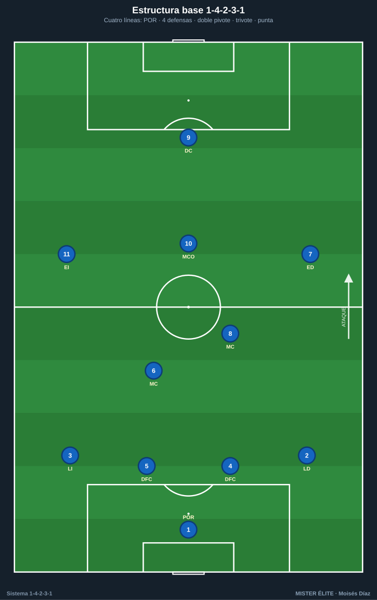
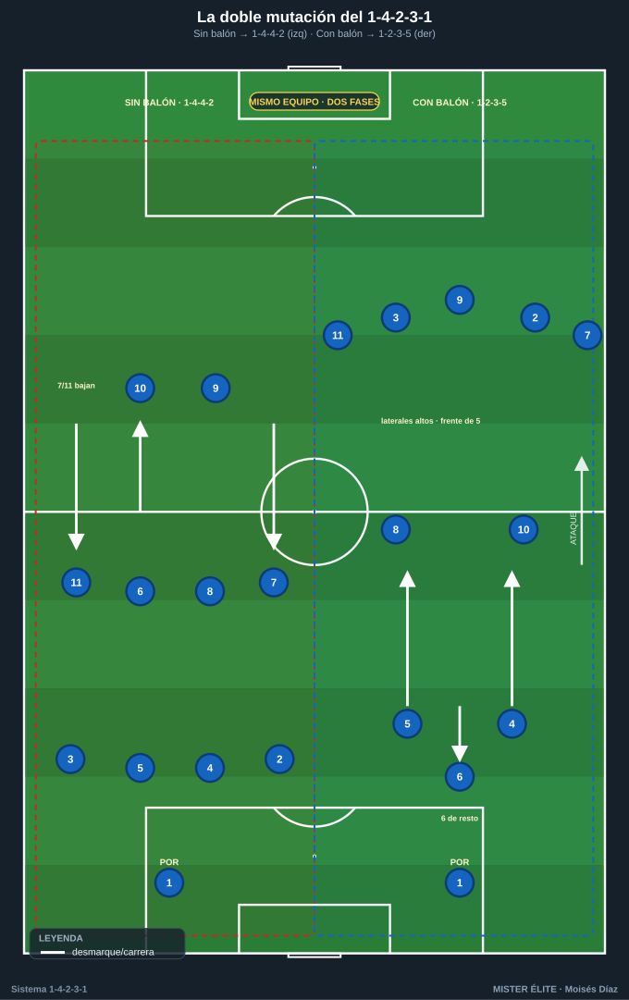
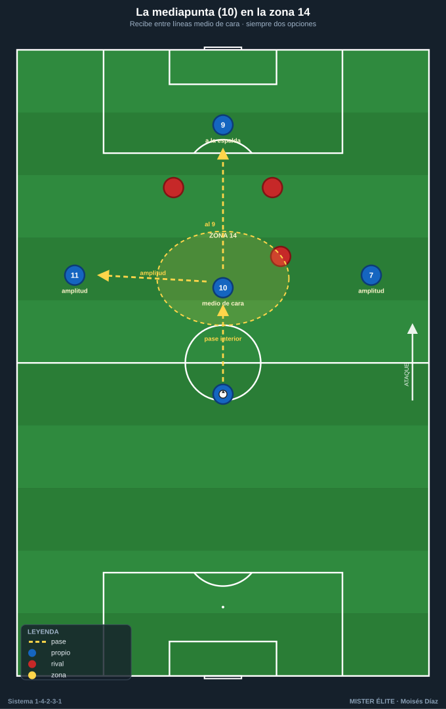
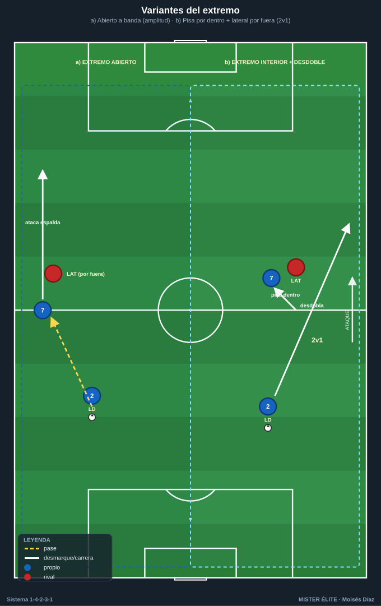
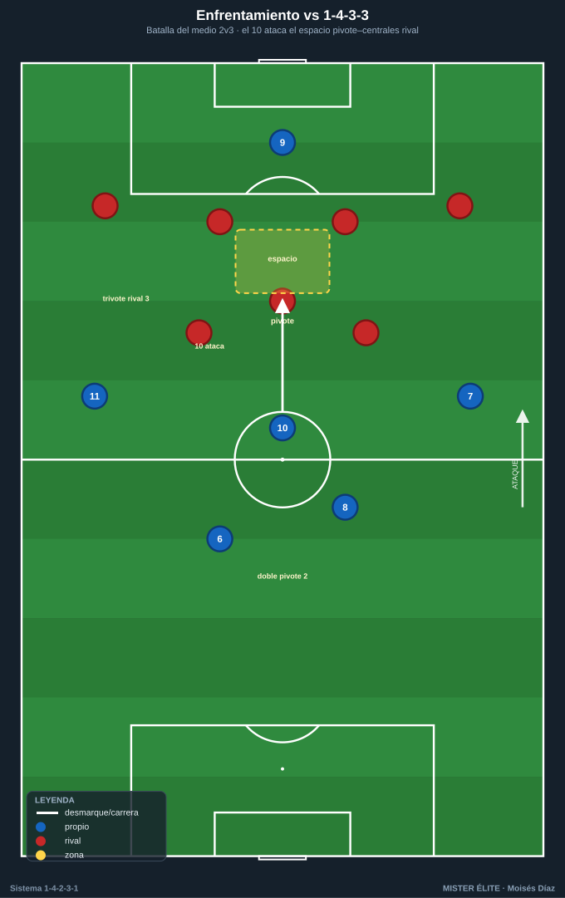
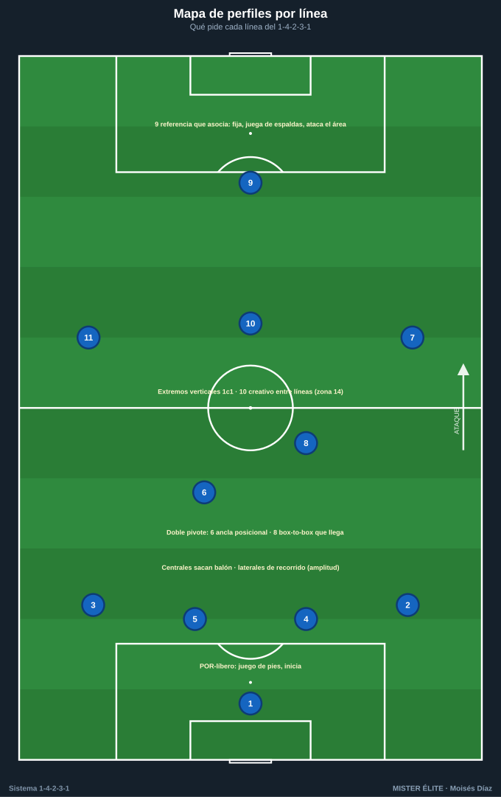

Módulo 01 · Fundamentos y estructura del 1-4-2-3-1
Nomenclatura del curso: POR 1 · línea de 4 (LD 2 · DFC 4 · DFC 5 · LI 3) · doble pivote MC 6 (ancla) + MC 8 (box-to-box) · trivote ED 7 · MCO 10 (mediapunta) · EI 11 · DC 9.
El 1-4-2-3-1 no es un dibujo rígido: es una estructura clara que muta según la fase de juego. Este módulo explica de qué piezas se compone, cómo cambia de forma sin balón y con balón, y qué perfil de jugador pide cada línea. Es teoría breve: lo justo para entender lo que luego se entrena en el campo.
1. La estructura: cuatro líneas claras
El 1-4-2-3-1 reparte a los diez jugadores de campo en cuatro líneas, y ese reparto limpio es su gran virtud: equilibrio y compartimentación.
- Línea defensiva (4): dos centrales (DFC 4 y 5) y dos laterales (LD 2, LI 3). Defensa de cuatro clásica con coberturas y basculaciones. Los laterales son la fuente principal de amplitud en ataque.
- Doble pivote (2): MC 6 y MC 8 por delante de los centrales. Es el corazón del sistema: tapa el espacio entre líneas, protege el carril central y arranca la construcción.
- Línea de 3 (3): dos extremos (ED 7, EI 11) abriendo el campo y una mediapunta (MCO 10) por dentro, jugando entre líneas.
- Punta (1): DC 9, referencia única que fija a los centrales y asocia hacia atrás.

Distancias de referencia
- Anchura defensiva: separaciones de 8–12 m entre defensas; nunca más de un pasillo de distancia.
- Doble pivote: separados 8–15 m entre sí, ~8–10 m por delante de los centrales. No se juntan ni se alinean; uno cubre la espalda del otro.
- Línea de 3: extremos a la máxima anchura; el 10 en el centro, 10–15 m por delante del doble pivote, en la franja entre la línea de medios y la defensa rival.
- Longitud del bloque (última línea ↔ 9): bloque medio = 30–35 m (estándar del curso); bajo 25–30 m; alto hasta 40 m.
- Distancia entre líneas propias: 10–12 m en bloque compacto sin balón; hasta 15 m en construcción/ataque para tener líneas de pase. Nunca más de 12 m sin balón en bloque medio/bajo.
2. La idea fuerza: la DOBLE estructura
El 1-4-2-3-1 son, en realidad, dos sistemas en uno según la fase:
- Sin balón → se repliega a 1-4-4-2 / 1-4-4-1-1. Los extremos 7/11 bajan a formar una línea de 4 medios junto al doble pivote; el 10 sube junto al 9 (1-4-4-2) o queda medio escalón por detrás vigilando al pivote rival (1-4-4-1-1). Dos líneas de cuatro muy compactas, difíciles de penetrar.
- Con balón → se estira a 1-2-3-5 / 1-4-3-3. Suben los dos laterales (2 y 3) hasta dar amplitud alta, un pivote (normalmente el 6) baja entre o junto a los centrales (salida en 3 tipo Lavolpe), el otro pivote (8) y el 10 forman la línea de creación, y arriba se dibuja un frente de cinco que ocupa los cinco carriles. Ese "5" lo forman los dos extremos + los dos laterales altos + el 9: dos quedan en banda y tres pueblan los carriles interiores y el central.
La transición fluida entre esas dos formas es lo que hace moderno y vigente al sistema. Entrenarla es el objetivo central del curso.

3. La mediapunta (10) y la zona 14
La zona 14 es la franja central justo delante del área rival (centro del último tercio). Es la zona de máxima generación de ocasiones, y el MCO 10 vive ahí:
- Recibe de espaldas o de perfil entre líneas, gira y filtra el último pase.
- Llega a rematar de segunda línea.
- Defensivamente, es el primer puente entre el bloque de medios y el 9.
Es el jugador con más libertad del equipo: se asocia con ambos extremos y descarga sobre el 9. Cuando recibe, debe tener siempre dos opciones: el 9 a la espalda de la defensa (para soltar de primeras) y un extremo o lateral en amplitud (para cambiar de orientación).

4. Variantes del sistema
Doble pivote: 6 + 8 vs 6 + 10 más bajo
- 6 + 8 (clásico): ancla posicional (6) + box-to-box (8) que conduce, equilibra y llega. Más recorrido y verticalidad; el 10 queda muy alto.
- 6 + 10 más bajo (doble seis creativo): dos mediocentros de inicio, uno destructor y otro organizador que baja a recibir; el "10" nominal juega más cerca del medio. Da más control y dominio del balón a costa de menos llegada al área. Útil contra rivales que aprietan la salida.
Extremos: abiertos vs interiores
- Extremos abiertos (verticales): pegados a banda, atacan el espacio a la espalda del lateral; dan amplitud pura, centros y uno-contra-uno.
- Extremos interiores (que pisan por dentro): entran al carril interior para combinar y rematar, liberando la banda al lateral que sube por fuera (mecanismo lateral-extremo). Genera superioridad interior y sobrecargas en zona 14.

Cuándo y cómo muta defensivamente
- A 1-4-4-2 sin balón: el 10 sube junto al 9 para presionar arriba a dos centrales o igualar a un rival con doble pivote.
- A 1-4-4-1-1 sin balón: el 10 queda medio escalón por detrás del 9 para tapar al pivote/organizador rival; preferido en bloque medio-bajo.
- En ambos, los extremos 7/11 bajan a la línea de 4 medios. La mutación es dinámica y por fase, no un cambio de jugadores.
5. Ventajas, desventajas y enfrentamientos
Ventajas
- Equilibrio defensa-ataque y control del centro (doble pivote = superioridad ante un punta solo).
- Estructura clara y fácil de enseñar; roles definidos por carril.
- Flexibilidad de fase (muta sin cambiar de jugadores).
- Un creador libre (10) en la zona de más valor.
Desventajas
- Puede quedar aislado el 9 si la línea de 3 no acompaña.
- Si los dos pivotes son ofensivos, se descubre el eje ante la contra.
- Exige laterales de mucho recorrido (sostienen toda la banda en ataque y defensa).
- El 10 que no repliega genera inferioridad en el medio contra trivotes (2 vs 3).
Enfrentamientos rápidos
- vs 1-4-3-3: la batalla del medio es 2 vs 3. Solución: el 10 baja a igualar (3 vs 3) o presión orientada a banda. A favor: el 10 ataca el espacio entre el pivote y los centrales rivales.
- vs 1-4-4-2: ventaja estructural típica: la zona 14 queda libre y el 10 encuentra espacio entre líneas. Riesgo: si los mediocentros del 4-4-2 son agresivos pueden incomodar al 10 — no es ventaja automática.
- vs 1-3-5-2: posible inferioridad central (2 vs 3 mediocentros). Los extremos deben replegar mucho para no dejar solos a los laterales ante los carrileros. Bascular rápido y castigar el lado débil que deja el carrilero al subir.

6. Perfiles idóneos por línea
| Línea | Dorsal | Perfil ideal |
|---|---|---|
| Portero | POR 1 | Juego de pies, valiente fuera del área, inicia la construcción (portero-líbero). |
| Centrales | DFC 4 / 5 | Sacan el balón (uno más zurdo para abrir por su perfil), buen 1c1, lectura y cobertura. |
| Laterales | LD 2 / LI 3 | Recorrido y fondo físico: defienden su carril y dan toda la amplitud; capaces de jugar de extremos altos. |
| Pivote ancla | MC 6 | Posicional, inteligencia táctica, primera salida limpia, protege a los centrales; rara vez abandona el eje. |
| Pivote box-to-box | MC 8 | Recorrido vertical, conducción, equilibrio y llegada al área de segunda línea. |
| Mediapunta | MCO 10 | Creativa: recibe entre líneas, gira bajo presión, último pase y gol; el cerebro del ataque en la zona 14. |
| Extremos | ED 7 / EI 11 | Verticales y desequilibrantes en el 1c1; dan amplitud o pisan por dentro; disciplina defensiva para replegar. |
| Delantero | DC 9 | Referencia que asocia: fija a los centrales, juega de espaldas, ataca el área y abre espacio para 10 y 8. |

Ideas clave
- El 1-4-2-3-1 son dos estructuras en una: muta a 1-4-4-2 / 1-4-4-1-1 sin balón y a 1-2-3-5 / 1-4-3-3 con balón, sin cambiar de jugadores.
- El doble pivote (6 ancla + 8 box-to-box) es el corazón: da control del centro y superioridad ante un punta solo.
- La mediapunta (10) en la zona 14 es la pieza más valiosa: recibe entre líneas con dos opciones siempre.
- Los extremos 7/11 son la bisagra de la mutación: dan amplitud con balón y bajan a la línea de 4 sin balón.
- Pide laterales de mucho recorrido y un central que saque el balón.
Errores comunes
- Tratar el dibujo como fijo: si no se entrena la mutación, el equipo defiende mal y ataca corto.
- Dejar a los dos pivotes a la misma altura (sin escalonar): se pierde cobertura y líneas de pase.
- Subir los dos laterales a la vez sin tapar la espalda: el agujero estructural más explotado del sistema.
- Que el 10 no repliegue: inferioridad numérica en el medio contra trivotes.
- Aislar al 9 arriba: sin acompañamiento de la línea de 3, la referencia se queda sola.